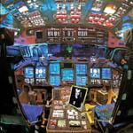

Music Reviews
-
Pharrell Williams G I R L
2014 is shaping up to be the year of Pharrell Williams. But does G I R L live up to the hype?
Luiza Lodder gives G I R L a chance... -

Schoolboy Q Oxymoron
Oxymoron represents Schoolboy Q's major label debut, and many have been expecting a masterpiece along the lines of Kendrick Lamar's 2012 masterpiece Good Kid, M.A.A.D City. Will Q get high marks or will this be an album full of avoidable schoolboy errors and contradictions formed out of habit?
Richard Petty joins the queue to submit his review... -
Real Estate Atlas
Though it's unlikely to make fans out of naysayers, Real Estate's latest prove they're still masters of sumptuous, melancholic melody while allowing the dreary overcast fog they've been slowly building since they began envelope even further.
Peter Quinton gets real with...nevermind, too easy -
Xiu Xiu Angel Guts: Red Classroom
Titles lifted from Asian erotic cinema? Music videos premiered on Pornhub? Sounds like it's business as usual for Jamie Stewart & co.'s 11th album.
Mark Davison can still hear the pigs screaming... -
+/- Jumping The Tracks
5th album of intricate indie rock from +/-, the first in 5 years, sees a mellowing and maturing of their sound. Does this make it any less fun to listen to?
David John Wood takes the leap... -

Damaged Bug Hubba Bubba
With Thee Oh Sees currently on hold, John Dwyer finds a way to take Tiger Mountain by Radio Shack.
Sean Caldwell looked up ColecoVision... -
Beck Morning Phase
The illustrious singer-songwriter returns with a spiritual successor to his esteemed 2002 release Sea Change.
Juan Edgardo Rodríguez reviews... -

St. Vincent St. Vincent
A fantastically fascinating fusion of funk and fuzz.
Joe Rivers is still upset Annie Clark doesn't have a backing band called The Grenadines... -

Phantogram Voices
After four years, the New York 'street beat' duo return with their sophomore follow-up to 2009's Eyelid Movies. If you're mousing over the link, you've got your hand on the button now.
Ben Jones was really looking forward to this one... -

Shocking Pinks Guilt Mirrors
The reclusive New Zealander comes back after a seven year absence with Guilt Mirrors, a comprehensive triple-album recorded during a time of personal and emotional crisis.
Juan Edgardo Rodríguez sat through it so you don't have to...